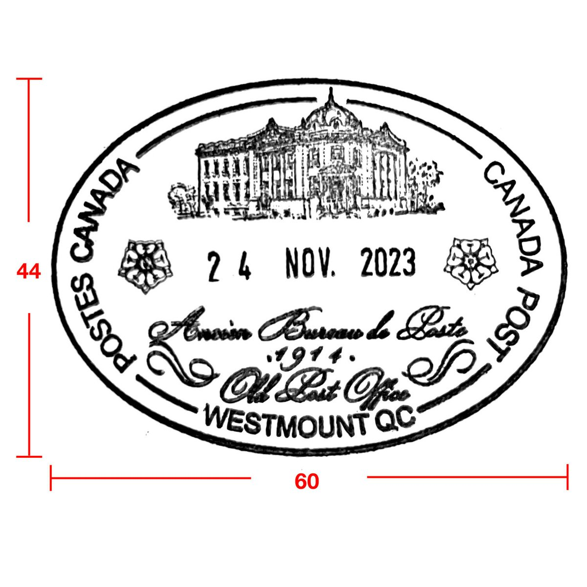

BP Montréal Westmount pictorial cancel
Ancien Bureau de Poste – 1914 – Old Post Office · French
- Status
- Active
- Run dates
- 2019-01-01 to 2030-12-31
- Design
- "Ancien Bureau de Poste / 1914 / Old Post Office"; post office building
- Ink colour
- Black
- Designer
- Unknown
- Post office
- BP Montréal Westmount
AV 1217 Greene
Montreal, QC
H3Z 1P0 - Subjects
- architecture, building, post office, postal history
- Notes
- There are English and French versions of this cancel; they differ only in the date format.
Collect it by mail. Send your stamped covers, with a stamped return envelope, to the post office address above (check the notes first). How to collect pictorial cancels by mail · en français
 BP Montréal BJazz
BP Montréal BJazz BP Montréal BREM
BP Montréal BREM BP Montréal BCityscape
BP Montréal BCityscape